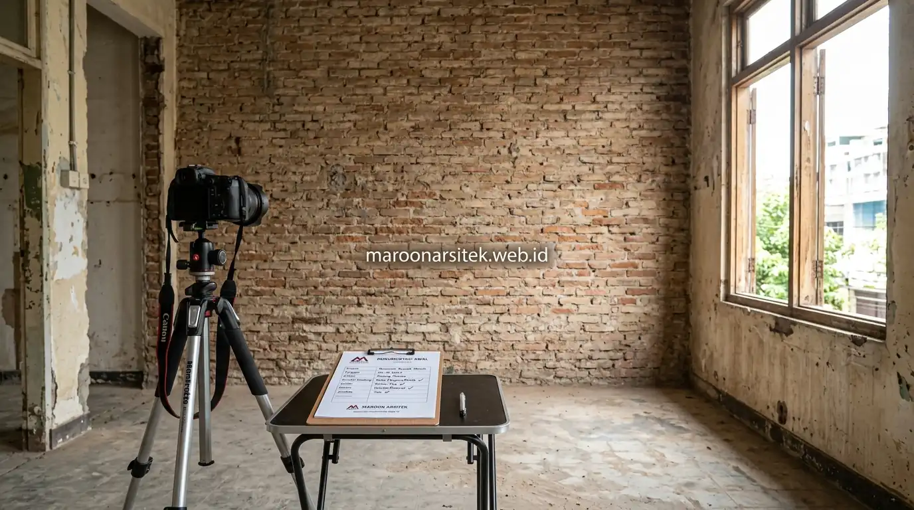

Kesalahan renovasi rumah tidak hanya berkaitan dengan perencanaan konsep dan material, tetapi juga sering terjadi pada aspek pengelolaan jadwal, komunikasi, dan proses pasca renovasi yang apabila diabaikan dapat memicu biaya tambahan tak terduga. Maroon Arsitek merangkum kesalahan pada tiga aspek ini yang sering luput dari perhatian pemilik rumah saat merencanakan renovasi melalui layanan jasa renovasi rumah profesional.
Pemborosan anggaran tidak selalu berasal dari kesalahan konsep desain semata, melainkan juga dari aspek pengelolaan proyek yang kurang mendapat perhatian meski sebenarnya berdampak signifikan terhadap kelancaran renovasi. Berikut rincian kesalahan yang perlu diwaspadai berdasarkan tahapan pengelolaan proyek renovasi rumah agar hunian idaman dapat terwujud sesuai rencana anggaran biaya (RAB).
Kesalahan Pengelolaan Waktu dan Jadwal Renovasi
Kesalahan dalam mengelola waktu dan jadwal renovasi berkontribusi pada pembengkakan biaya melalui perpanjangan durasi proyek yang tidak terencana, terutama apabila faktor eksternal seperti cuaca tidak dipertimbangkan sejak awal. Berikut kesalahan yang umum terjadi pada aspek ini:
- Tidak menetapkan jadwal detail per tahap pekerjaan: Hal ini menyulitkan pemantauan apakah proyek berjalan sesuai rencana atau mengalami keterlambatan yang menumpuk.
- Memulai renovasi tanpa mempertimbangkan musim hujan: Kondisi cuaca basah berpotensi memperlambat pekerjaan struktural, pengecoran, dan pengecatan eksterior secara signifikan.
- Tidak mengalokasikan waktu cadangan untuk kendala tak terduga: Tanpa buffer time, keterlambatan kecil pada pengiriman material dapat mengganggu keseluruhan rencana penyelesaian proyek.
- Menjalankan renovasi sambil tetap menghuni rumah tanpa perencanaan area steril: Hal ini dapat memperlambat pekerjaan akibat keterbatasan akses tim konstruksi dan mobilitas pekerja.
Perencanaan jadwal yang matang sejak awal, termasuk mempertimbangkan faktor cuaca dan kondisi hunian, membantu mencegah perpanjangan waktu yang berujung pada biaya tambahan di luar rencana awal.
Penyusunan Kurva S dan Alokasi Waktu Cadangan
Pengelolaan linimasa yang efektif membutuhkan jadwal kerja terstruktur berupa kurva S yang memetakan progres harian dan mingguan secara transparan. Dengan kurva S, deviasi waktu pengerjaan dapat dideteksi sejak dini sebelum menimbulkan dampak keterlambatan berantai.
Alokasi waktu cadangan (buffer time) sebesar 10-15% dari total durasi proyek memberikan fleksibilitas saat menghadapi kendala logistik atau faktor cuaca buruk, sehingga penyelesaian proyek tetap dapat tercapai tepat waktu tanpa membebani biaya sewa tukang tambahan.
Kesalahan Komunikasi dan Dokumentasi Selama Proses Renovasi
Kesalahan komunikasi dan minimnya dokumentasi menjadi penyebab tersembunyi pembengkakan biaya, karena kesalahpahaman yang tidak terdeteksi sejak awal sering kali baru disadari setelah pekerjaan berjalan cukup jauh. Berikut kesalahan yang sering ditemukan pada aspek ini:
- Tidak mendokumentasikan kondisi awal rumah sebelum renovasi dimulai: Ketiadaan foto dan catatan kondisi eksisting menyulitkan perbandingan sebelum dan sesudah untuk keperluan verifikasi hasil kerja maupun klaim kerusakan.
- Mengandalkan komunikasi verbal tanpa konfirmasi tertulis untuk setiap perubahan: Kesepakatan lisan sangat berisiko menimbulkan perselisihan mengenai spesifikasi, volume, dan biaya tambahan yang sebenarnya telah disepakati.
- Tidak melibatkan seluruh anggota keluarga dalam keputusan desain: Keputusan sepihak sering kali memicu revisi mendadak di tengah proses renovasi akibat ketidaksepakatan anggota keluarga lain yang baru terungkap.
Dokumentasi tertulis dan komunikasi yang melibatkan seluruh pihak terkait sejak awal membantu mencegah revisi mendadak yang berpotensi menambah biaya dan memperpanjang waktu pengerjaan.

Pentingnya Site Instruction dan Change Order Tertulis
Setiap perubahan desain, penggantian merek material, atau penambahan titik instalasi wajib dituangkan dalam formulir Change Order atau Site Instruction tertulis yang ditandatangani pemilik rumah dan pihak kontraktor. Langkah ini menjamin keterbukaan kalkulasi biaya tambah-kurang secara akurat.
Selain itu, dokumentasi foto berkala dari setiap tahapan pekerjaan tersembunyi — seperti jalur pipa instalasi air kotor di bawah lantai atau kabel listrik di balik plafon — sangat bermanfaat sebagai arsip pemeliharaan hunian di masa depan, sebagaimana diterapkan dalam standar kerja jasa renovasi rumah Jakarta.
Kesalahan pada Tahap Pasca Renovasi yang Sering Terlewat
Kesalahan pada tahap pasca renovasi sering kali baru terasa dampaknya setelah proyek dinyatakan selesai, ketika perbaikan tambahan menjadi lebih rumit dan mahal dibanding jika ditangani sebelum serah terima. Berikut kesalahan yang umum terjadi pada tahap akhir ini:
- Tidak melakukan pemeriksaan akhir menyeluruh sebelum pembayaran pelunasan: Cacat pengerjaan, kebocoran pipa tersembunyi, atau ketidakrapian cat baru ditemukan setelah kontraktor tidak lagi bertanggung jawab penuh di lokasi.
- Mengabaikan periode garansi dan tidak mencatat detail cakupannya: Klien kesulitan mengajukan klaim perbaikan gratis apabila muncul masalah retak atau kebocoran karena tidak memegang surat perjanjian garansi pemeliharaan.
- Langsung menggunakan ruang tanpa masa pengeringan material tertentu: Membebani lantai semen atau menggunakan dinding cat basah secara terburu-buru berisiko menyebabkan kerusakan dini pada elemen yang belum sepenuhnya mengeras.
Ketelitian pada tahap pasca renovasi, termasuk pemeriksaan akhir dan pemahaman cakupan garansi, menjadi langkah penting untuk memastikan hasil renovasi bertahan lama tanpa biaya perbaikan tambahan yang tidak perlu.
Prosedur Joint Inspection dan Klausul Garansi Pemeliharaan
Sebelum menandatangani Berita Acara Serah Terima (BAST) dan melunasi pembayaran akhir, lakukan joint inspection bersama tim pelaksana. Siapkan checklist pemeriksaan yang mencakup tes kelancaran pembuangan air kamar mandi, pengujian saklar kelistrikan, fungsi kunci pintu jendela, serta kerataan permukaan lantai.
Pastikan kontraktor menyediakan masa pemeliharaan (garansi retensi) dengan jangka waktu jelas. Dalam SOP Maroon Arsitek, garansi pemeliharaan tertulis diberikan untuk memberikan rasa aman dan jaminan bahwa setiap ketidaksempurnaan pasca renovasi akan diperbaiki secara tuntas tanpa biaya tambahan.